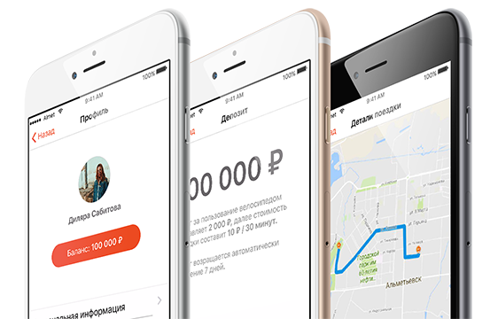

Депозит 200 рублей. Стоимость аренды 10 рублей, снимается каждый 30 минут. Если на велосипеде горит синий сигнал - значит велосипед готов к поездке!
Хороших велосипедных прогулок! Оставлять велосипед обязательно на специальных размеченных площадках.
Разблокируй любой велосипед отсканировав на нем QR код — наслаждайся ездой. Для завершения поездки потяни рычажок на замке. Тем самым велоспиед заблокируется, и его можно оставить на велодорожке.
Прокат подразумевает много способов добраться до места. Не нужно таскать за собой велосипед, чтобы покататься в любимом парке на другом конце города.
Не нужно заключать договор или платить наличными
